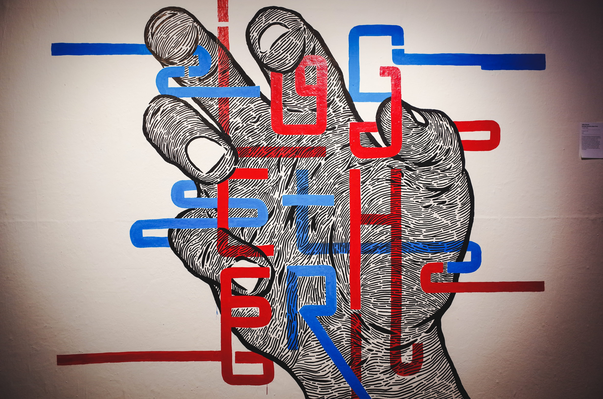

Typeforce celebrated its 9th year of showcasing emerging type-based artists in Chicago's Bridgeport neighborhood. Every year co-curators Ed Marszewski (Marz Community Brewing + Lumpen Radio) and Dawn Hancock (Firebelly) select typographic works from hundreds of entries including screenprints, sculptures, typefaces, and computer-based visuals.
Typeforce is open at Co-Prosperity Sphere, 3219 S Morgan St. Reception on Friday, February 23 from 6-11pm. The show runs through March 10, 2018. Visit typeforce.com for more details.

TOGETHER by Abby Wynne, Michelle Bowers, Jesse Hora,
Jackieland by Jacqueline Frole
Typeforce 9 showcases typography as a visual and cultural force ever relevant to reflect the aesthetic taste and political truths of our time.
Dadata by Brian Lange, Kristen Myers, Rubani Shaw, Kurt the Algorithm
Presidential Grotesque by Don Zegler
TF9 restructured old symbols, mocked award show and clout culture, leapt into body and national politics, and featured many timely implementations of tech ranging from small robotics to AI-fueled poster design.
1. Open Up 2. Lift Up 3. Grow Up, 4. Face Up, 5. Stand Up by TotesFerosh

by 3st
KNEEL by Kaleb Dean